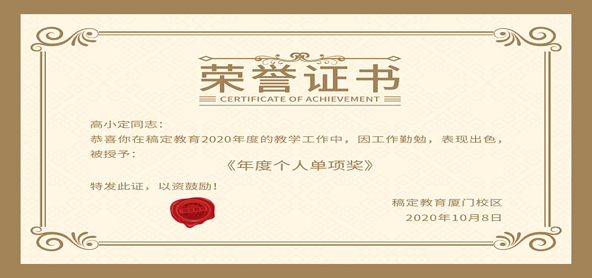
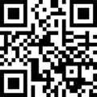

该产品为正品
防伪码：22450855030
再次查询
产品信息
Product information
产品名称
新会陈皮
产品产地
江门·新会
产品规格
250g
产品年份
2018年
主体信息
Principal information
企业名称
广东新会陈皮农业委员会
生产地址
广东省江门市新会区某某街道134号
联系人
张三
联系方式
13333333333
企业荣誉
Enterprise honor

2010年，被国家质量监督检验检疫总局确认为第一批获得“新会陈皮地理标志保护产品”专用标志使用资格的企业。
2010年，被国家质量监督检验检疫总局确认为第一批获得“新会陈皮地理标志保护产品”专用标志使用资格的企业。
生产基地
Production site
广东新会陈皮XXXXXX基地
广东省江门市新会区某某街道134号
欢迎关注我们的微信公众号

防伪标识
Anti-counterfeiting identification
认准此标识，防伪有保障
新会陈皮防伪证明标识共分为横版和竖版两种，标识由新会陈皮品牌logo，防伪涂层、生产年份，标识规格，标识序列码、防伪查询二维码等内容组成，可通过扫码录入标识防伪码，查询产品真伪以及产品追溯信息。
为了保障消费者的权益，请在购买新会陈皮时，务必检查陈皮外包装上是否张贴防伪标识。如未张贴，则该陈皮非新会陈皮。